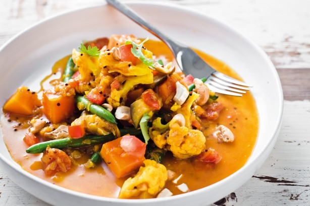

Ingredients:
1)1/2 medium-sized (100g/4oz) aubergine (eggplant) cut into 2cm x 1cm/¾in x
1/2 in sticks
2).2 small carrots (100g/4oz), peeled and cut into 2cm x 1cm/¾in x 1/2 in
sticks
3)100g/4oz/1 cup peas
4).100g/4oz/1 cup French beans, cut into 2.5cm/1in pieces
5).1 medium-sized potato (100g/4oz), peeled and cut into 2cm x 1cm/¾in x 1/2
in sticks
6).50g/2oz/ 1/2 cup freshly grated coconut
7).4 fresh hot green chillies
8)2 tbsp white poppy seeds
9)1 1/4 tsp salt
10)3 medium-sized tomatoes, roughly chopped
11)1 tbsp natural plain yogurt
12)1 tsp garam masala
13)2 tbsp chopped, fresh green coriander
How to make vegetarian curry:
Place the aubergine (eggplant), carrots, peas, French beans and potato in a medium-sized saucepan. Add 250ml/8fl oz/1 cup water. Bring to the boil. Cover, turn the heat to medium and cook for 4 minutes or until the vegeatbles are just tender.
Meanwhile put the coconut, chillies, poppy seeds and salt in the container of an electric blender. Add 150ml/5fl oz water and grind to a fine paste. Set aside.
When the vegetables are cooked, add the spice paste and another 150ml/5fl oz water. Stir and simmer gently for 5 minutes. Now add the tomatoes, the yogurt and the garam masala. Stir gently to mix well. Bring to the boil and simmer gently for 2-3 minutes. Turn into a serving dish and garnish the vegetable curry with the fresh coriander.